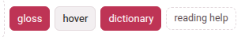
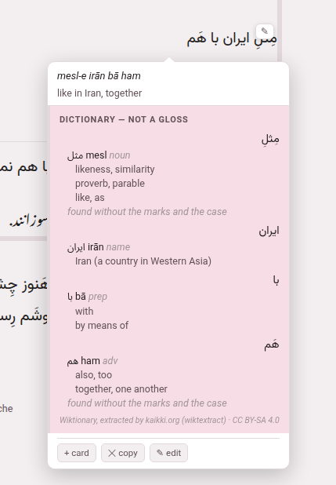

Dictionaries
A dictionary is the first thing to install for a language you are reading before its glosses exist. It looks up the words of a chunk nobody has glossed and shows, under that chunk, what each one can mean — in a panel that says plainly it is not a gloss.
1. Getting one#
- Open the reading-help page (
/lookup/). Its first section, A dictionary, has a row for each of the eleven languages. - Press get it beside the language you are reading.
- Watch the row. Parseh downloads Wiktionary’s own extract for that language, from kaikki.org, and builds a database out of it, saying as it goes how far it has got. The download is 30 MB for a small language and half a gigabyte for a large one; a minute or two on a fast line, longer for the large ones.
When it is done the row says how many entries it holds, its size, where it came from and when it was built — Persian’s is about 21 MB built, German’s over 300 — and from then on a reader or player of that language, opened or reloaded, has a dictionary switch in its header.
rebuild fetches it again: that is how you pick up a year of Wiktionary’s edits, and how a dictionary built by an older Parseh gains what a newer one reads from it (the labels that put the likely sense first, the forms a verb entry is made from). The old file keeps working until the new one is whole. remove deletes the file, after asking.
2. The switch#

dictionary sits in the header of every book reader and every video player — after gloss and hover in a book, after follow and hover ‖ in the player. Three rules govern it:
- It is there only when something is behind it.
- A reader asks the server once, when it opens, whether this language has a dictionary or a corpus for its gloss language, and checks whether a translation model is installed for the pair. With none of the three, there is no switch and no further request. With any one of them, the switch appears, and its tooltip names what it will do: look the words up, show a sentence somebody translated, translate the line — where nothing is glossed, shortened to whatever is actually installed.
- It is off until you turn it on.
- Off, the page draws nothing new, looks nothing up and hands no sentence to a translation model (the one thing it may still fetch is the synonym table, about a megabyte, when a model is installed for the pair). On, it is coloured like the other switches that are on.
- It is remembered.
- A book reader remembers it for that book; the video player remembers one setting for every video.
3. The panel#
The panel is drawn only for a chunk nobody has written a vocabulary line for, so a finished edition looks exactly as it did. With the switch on:
- click such a chunk in the chunks-and-glosses pass, whatever mode the reader is in, and its cloud opens on it (without the switch, the same click plays the subparagraph, as it always did; a chunk that has a vocabulary line still does);
- or, in hover mode, point at the chunk in pass 1, and its cloud opens as always.
Under what is written, the cloud then holds a tinted panel:

It is headed dictionary — not a gloss, and for each word of the chunk, in order, it gives:
- the word as the text writes it (with its reading beside it, in a Japanese or Chinese chunk that has a word line);
- each entry it found: the headword as the book spells it (a simplified Chinese book shows 帮忙, not the 幫忙 Wiktionary files it under — point at it to be told), its romanisation, its part of speech in grey, a note where the entry carries one;
- for a verb, its principal parts on a line of their own, under the language’s own labels — Italian vado, found under andare, gets pres. vado · p.p. andato · aux. essere. Where the forms belong to another verb than the headword, the line starts with an arrow to it: German stand in a sentence that ends … von seinem Stuhl auf. leads to → aufstehen, because the sentence the chunk sits in is sent along with it;
- up to three senses, the likeliest first (below);
- in grey, how the word was reached when it was not found as written — found without the marks and the case for a vowelled Persian word, or the ending that had to come off first;
- or, when nothing was found, not found (tried …), naming every form it looked for, so that “not in the dictionary” is never confused with “never asked”.
A line at the foot names the source and its licence: Wiktionary, extracted by kaikki.org (wiktextract) · CC BY-SA 4.0.
The panel opens at once saying looking it up… and fills a moment later; the cloud is placed again when it does, so it never hangs over the chunk it is about. Other things it can say: the dictionary has nothing for these words, and the dictionary could not be reached when the server did not answer. Under the dictionary’s block come the other two kinds of help, when they are installed, each ruled off from the one before: a machine’s reading and a sentence somebody translated.
In the video player the same panel appears in a phrase’s cloud, under whatever the phrase has written, and says phrase where the book says chunk.
The likely sense first#
A word may carry a dozen senses and only three fit. Wiktionary cannot say which one your sentence wants, but it does label some senses, and the dictionary keeps those labels: the panel puts plain senses first, then the marked ones (figurative, dialectal, regional, slang, vulgar, humorous and the like), then the stale ones (obsolete, archaic, historical, dated, rare, nonstandard, misspellings). The order is otherwise Wiktionary’s. Literary and poetic are deliberately not pushed down — this toolbox is pointed at literature — and neither is colloquial.
Where a corpus is installed, it breaks one more kind of tie: when one written word reaches two different headwords, the one more of the corpus’s sentences actually use is listed first.
A dictionary built before these labels existed still works; it simply gives its senses in Wiktionary’s order until you press rebuild.
How a form is found#
A dictionary is filed by headword and a chunk is running text, so most of the work is getting from one to the other:
- Inflected forms.
- Wiktionary lists the forms of a word, and the dictionary keeps them as pointers to their headword — most of the morphology of every language here.
- What is written onto a word.
- Some languages need rules of their own, and have them: Persian’s and Japanese’s affixes, Arabic’s conjunctions, one-letter prepositions and object pronouns written onto the word, French and Italian elisions (n’avait, l’uomo), Italian’s pronouns hung on an infinitive. Up to two pieces come off at once, the shallowest first, so a word the dictionary has is always found as itself.
- A Persian prefix typed apart.
- mi- and nemi- are written with a joiner, but often typed with a space; standing alone, they are looked up joined to the verb after them, and the panel shows the two as one entry.
- Chinese spellings.
- A simplified spelling is the word itself, not a form of it, and senses belonging to Cantonese or Hokkien are listed after Mandarin’s.
- Japanese and Chinese words.
- A text written without spaces has to be cut before anything can be looked up. Where the chunk has a word line — the division into words a person checked — each word is looked up as written and its row goes under that word. Where it has none, the chunk is cut by longest match against the dictionary’s own word list, with the inflection rules consulted as it goes (住んで reaches 住む). That cut is greedy and now and then visibly wrong; a wrong entry is easy to spot, which is why nothing cleverer is tried silently.
English, explained in English#
Every dictionary here is the English Wiktionary’s, and it explains the words of every language in English. For Persian or Italian that is a translation. For English itself it is a definition, written in the language you are learning. So a reader or player of English has one more switch, definitions, beside dictionary (greyed while dictionary is off), and it is off until you turn it on:
- Off.
- An entry still gives the headword, how it is said, its part of speech, how the word was reached and a verb’s parts, and the panel says once where the definitions are: the dictionary explains these words in English: “definitions”, in the header, shows what it says.
- On.
- Each entry gives Wiktionary’s definitions with the labels Wiktionary puts on them — (intransitive), (countable), (slang) — the first three at once, and the rest behind a 2 more definitions button (it counts them).
- A third switch
- appears where a translation model reads English into the language the glosses are written in: it is named after that language — in italian, in persian — and puts each definition into it, underneath, as a machine’s reading. It is greyed until definitions is on.
All three are remembered like the dictionary’s own.
It gets ahead of you#
While you are not asking anything, the reader looks up the unglossed chunks of the next ten sentences — subparagraphs in a book, captions in a video — so the panel opens already filled when you get there. One lookup at a time, only after a moment’s quiet (a scroll, a key or a click puts it off), and never while a cloud is open: the lookup you are waiting for is never queued behind ten you are not. It needs no setting; it happens whenever the dictionary switch is on.
4. Taking it into a gloss#
The reading panel has no buttons that write: nothing in it becomes a gloss. Where you write a chunk’s gloss — the chunk sheet in a book reader (✎ edit), the edit cloud in the player — the header has ⊕ sources. It opens a column beside the fields with the same dictionary rows, the machine’s reading and the translated sentences, and here every line has buttons that put it into a field: meaning →, romanisation →, \dw → vocabulary for a word, a whole \vb → vocabulary for a verb the language’s recipe recognises (in the player, → vocabulary). They only fill the box; nothing reaches the book or the video until you save the chunk, down the ordinary edit route with its ordinary checks.
The same column ends with an external chatbot block built from what the dictionary and the corpus found: Ask LLM copies a prompt holding the sentence, the sentences around it, the dictionary’s rows and every translated sentence the corpus has for the chunk — never the local model’s reading — for you to paste into any chatbot you like; paste its answer into the box under it and Use translation marks the chunk’s share of it the way the machine’s reading is marked. The Books and Videos sections of this guide say the rest about editing.
For the command line
python3 lib/getdict.py # which dictionaries are installed, and which are notpython3 lib/getdict.py hi # fetch Hindi's and build dict/hi.dbpython3 lib/getdict.py --all # every language the toolbox teachespython3 lib/lookup.py zh "我喜欢喝茶" # what a reader would be shown for a phrase